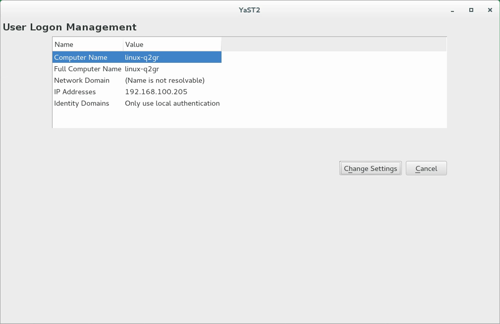
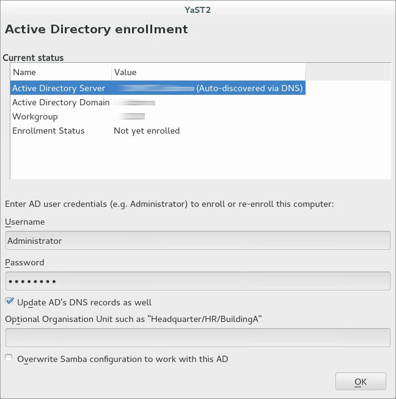
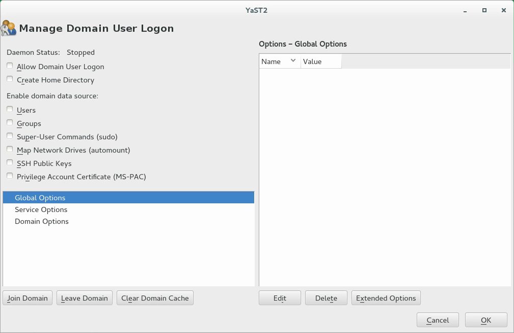

7.3. Configuring a Linux client for Active Directory
Before your client can join an Active Directory domain, adjustments must be made to your network setup to ensure the flawless interaction of client and server.
- DNS
-
Configure your client machine to use a DNS server that can forward DNS requests to the Active Directory DNS server. Alternatively, configure your machine to use the Active Directory DNS server as the name service data source.
- NTP
-
To succeed with Kerberos authentication, the client must have its time set accurately. It is recommended to use a central NTP time server for this purpose (this can be also the NTP server running on your Active Directory domain controller). If the clock skew between your Linux host and the domain controller exceeds a certain limit, Kerberos authentication fails and the client is logged in using the weaker NTLM (NT LAN Manager) authentication. For more details about using Active Directory for time synchronization, see Procedure 7.2, “Joining an Active Directory domain using ”.
- Firewall
-
To browse your network neighborhood, either disable the firewall entirely or mark the interface used for browsing as part of the internal zone.
To change the firewall settings on your client, log in as
rootand start the YaST firewall module. Select . Select your network interface from the list of interfaces and click . Select and apply your settings with . Leave the firewall settings with . To disable the firewall, check the option, and leave the firewall module with . - Active Directory account
-
You cannot log in to an Active Directory domain unless the Active Directory administrator has provided you with a valid user account for that domain. Use the Active Directory user name and password to log in to the Active Directory domain from your Linux client.
7.3.1. Choosing which YaST module to use for connecting to Active Directory
YaST contains multiple modules that allow connecting to an Active Directory:
-
Use both an identity service (usually LDAP) and a user authentication service (usually Kerberos). This option is based on SSSD and in the majority of cases is best suited for joining Active Directory domains.
This module is described in the section called “Joining Active Directory using ”.
-
Join an Active Directory (which entails use of Kerberos and LDAP). This option is based on
winbindand is best suited for joining an Active Directory domain if support for NTLM or cross-forest trusts is necessary.This module is described in the section called “Joining Active Directory using ”.
7.3.2. Joining Active Directory using
The YaST module supports authentication at an Active Directory. Additionally, it also supports the following related authentication and identification providers:
- Identification providers
-
-
Support for legacy NSS providers via a proxy.
-
FreeIPA and Red Hat Enterprise Identity Management provider.
-
An LDAP provider. For more information about configuring LDAP, see
man 5 sssd-ldap. -
An SSSD-internal provider for local users.
-
- Authentication providers
-
-
Relay authentication to another PAM target via a proxy.
-
FreeIPA and Red Hat Enterprise Identity Management provider.
-
An LDAP provider.
-
Kerberos authentication.
-
An SSSD-internal provider for local users.
-
Disables authentication explicitly.
-
To join an Active Directory domain using SSSD and the module of YaST, proceed as follows:
-
Open YaST.
-
To be able to use DNS auto-discovery later, set up the Active Directory Domain Controller (the Active Directory server) as the name server for your client.
-
In YaST, click .
-
Select , then enter the IP address of the Active Directory Domain Controller into the text box .
Save the setting with .
-
-
From the YaST main window, start the module .
The module opens with an overview showing different network properties of your computer and the authentication method currently in use.

Figure 7.2. Main window of -
To start editing, click .
-
Now join the domain.
-
Click .
-
In the appearing dialog, specify the correct . Then specify the services to use for identity data and authentication: Select for both.
Ensure that is activated.
Click .
-
You can keep the default settings in the following dialog. However, there are reasons to make changes:
-
If the local host name does not match the host name set on the domain controllerFind out if the host name of your computer matches the name under which your computer is known to the Active Directory Domain Controller. In a terminal, run the command
hostname, then compare its output to the configuration of the Active Directory Domain Controller.If the values differ, specify the host name from the Active Directory configuration under . Otherwise, leave the appropriate text box empty.
-
If you do not want to use DNS auto-discoverySpecify the that you want to use. If there are multiple Domain Controllers, separate their host names with commas.
-
-
To continue, click .
If not all software is installed already, the computer now installs missing software. It then checks whether the configured Active Directory Domain Controller is available.
-
If everything is correct, the following dialog should now show that it has discovered an but that you are .
In the dialog, specify the and of the Active Directory administrator account (
Administrator).To make sure that the current domain is enabled for Samba, activate .
To enroll, click .

Figure 7.3. Enrolling into a domain -
You should now see a message confirming that you have enrolled successfully. Finish with .
-
-
After enrolling, configure the client using the window .

Figure 7.4. Configuration window of-
To allow logging in to the computer using login data provided by Active Directory, activate .
-
Optionally, under , activate additional data sources such as information on which users are allowed to use
sudoor which network drives are available. -
To allow Active Directory users to have home directories, activate . The path for home directories can be set in multiple ways—on the client, on the server, or both ways:
-
To configure the home directory paths on the Domain Controller, set an appropriate value for the attribute
UnixHomeDirectoryfor each user. Additionally, make sure that this attribute replicated to the global catalog. For information on achieving that under Windows, see https://support.microsoft.com/en-us/kb/248717. -
To configure home directory paths on the client in such a way that precedence is given to the path set on the domain controller, use the option
fallback_homedir. -
To configure home directory paths on the client in such a way that the client setting overrides the server setting, use
override_homedir.
As settings on the Domain Controller are outside of the scope of this documentation, only the configuration of the client-side options is described in the following.
From the side bar, select , then click . From that window, select either
fallback_homediroroverride_homedir, then click .Specify a value. To have home directories follow the format
/home/USER_NAME, use/home/%u. For more information about possible variables, see the man pagesssd.conf(man 5 sssd.conf), section override_homedir.Click .
-
-
-
Save the changes by clicking . Then make sure that the values displayed now are correct. To leave the dialog, click .
7.3.3. Joining Active Directory using
To join an Active Directory domain using winbind and the module of YaST, proceed as follows:
-
Log in as
rootand start YaST. -
Start .
-
Enter the domain to join at in the screen (see Figure 7.5, “Determining Windows domain membership”). If the DNS settings on your host are properly integrated with the Windows DNS server, enter the Active Directory domain name in its DNS format (
mydomain.mycompany.com). If you enter the short name of your domain (also known as the pre–Windows 2000 domain name), YaST must rely on NetBIOS name resolution instead of DNS to find the correct domain controller. Figure 7.5. Determining Windows domain membership
Figure 7.5. Determining Windows domain membership -
To use the SMB source for Linux authentication, activate .
-
To automatically create a local home directory for Active Directory users on the Linux machine, activate .
-
Check to allow your domain users to log in even if the Active Directory server is temporarily unavailable, or if you do not have a network connection.
-
To change the UID and GID ranges for the Samba users and groups, select . Let DHCP retrieve the WINS server only if you need it. This is the case when certain machines are resolved only by the WINS system.
-
Configure NTP time synchronization for your Active Directory environment by selecting and entering an appropriate server name or IP address. This step is obsolete if you have already entered the appropriate settings in the stand-alone YaST NTP configuration module.
-
Click and confirm the domain join when prompted for it.
-
Provide the password for the Windows administrator on the Active Directory server and click (see Figure 7.6, “Providing administrator credentials”).
Figure 7.6. Providing administrator credentials
After you have joined the Active Directory domain, you can log in to it from your workstation using the display manager of your desktop or the console.
Joining a domain may not succeed if the domain name ends with .local. Names ending in .local cause conflicts with Multicast DNS (MDNS) where .local is reserved for link-local host names.
Only a domain administrator account, such as Administrator, can join SUSE Linux Enterprise Server into Active Directory.
7.3.4. Checking Active Directory connection status
To check whether you are successfully enrolled in an Active Directory domain, use the following commands:
-
klistshows whether the current user has a valid Kerberos ticket. -
getent passwdshows published LDAP data for all users.